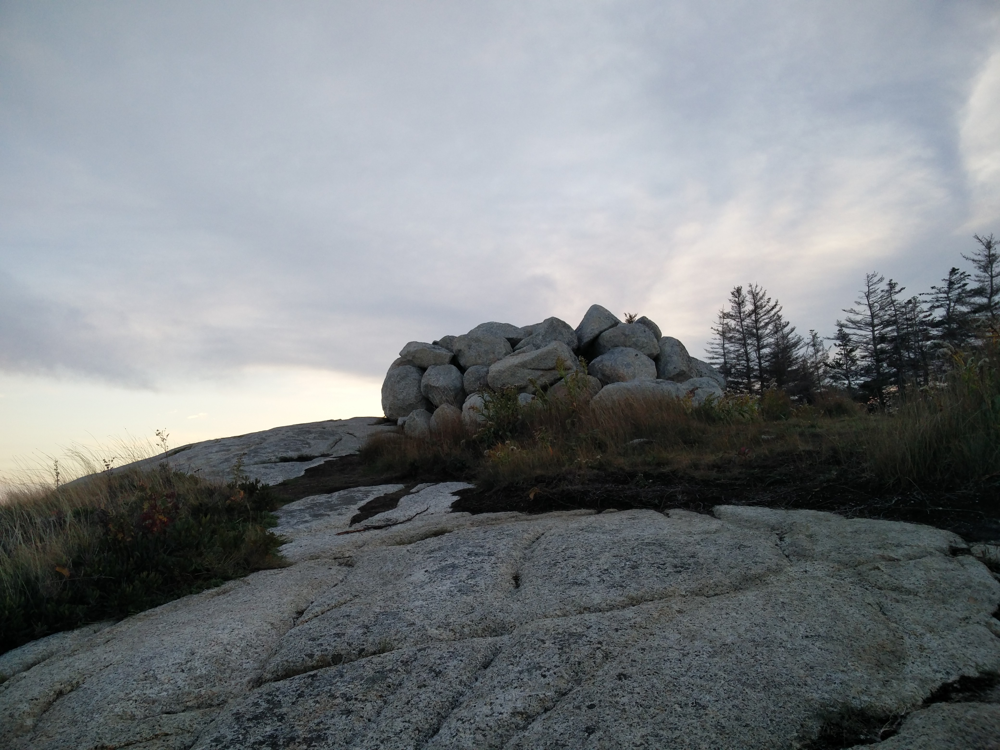
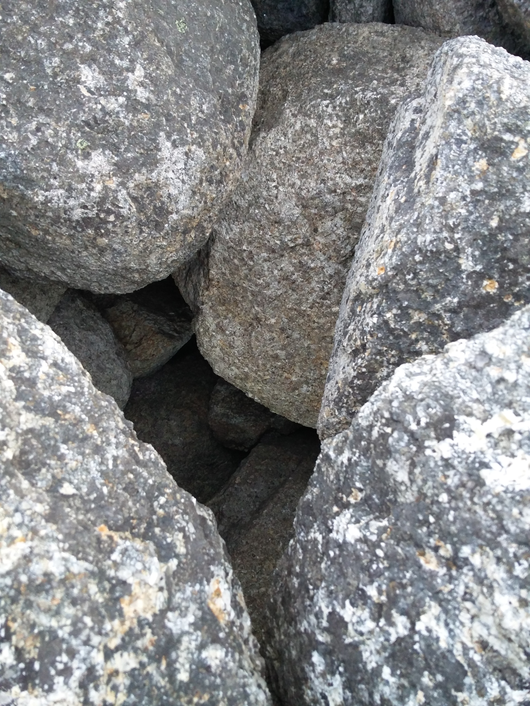

Trip to the Castle
The Beginning
A long time ago there was a castle by the ocean. The castle was ruled by an indolent king who never wanted to do any work. His advisors daily admonished him to diligently take care of matters, to care for the people, the country and his own castle. But each day everything seemed like so much bother and so much work to him, so he would put it off for tomorrow. He wouldn't rise up to work even when there was a terrible snowstorm and many of his people were suffering, or when there was a poor harvest and the people did not have food. Eventually his castle and country fell into poverty and disrepair, but he was still unconcerned and everything seemed like so much work. One day a neighboring kingdom took over his land, much to the delight of his people, and eventually the king died, much to the delight of his few remaining servants. After a long time and a few changes of ownership the HRM made his land into a park called Herring Cove Provincial Park Reserve, and all that was left of his castle was a pile of stones...

The Dungeon
During this king's reign a young ambitious man had advocated cleaning the castle. He brought up the matter repeatedly and even went so far as to arrange a group of people with mops and brushes to come to the castle and start working. The king being disturbed from an important nap went into a rage and had the poor fellow imprisoned in the dungeon. The king promptly forgot about the matter and the man remained in the dungeon for three years until a crumbling part of the castle wall made a hole large enough for him to escape. As he squeezed out of his cell, and crept past the sleeping guard he accidentally dropped a small glass vial with the map to the treasure in it. By the time he noticed it was missing it was too late to go back for it and since nobody ever cleaned that castle it may still be right there where it fell to this day, at the collapsed entrance to the dungeon!
The entrance to the dungeon would look something like this:

and closer up....
